The European Gaze
on India
Foreign maps of India, 1519–1946, with a 1947 epilogue – and what they reveal about the eye behind the plate. A map records not only a land but who is looking, what they want, and what they cannot yet see.
01Antiquity and RenaissanceCoastline and rumour – India inherited from Ptolemy and revealed, piecemeal, by Portuguese pilots.
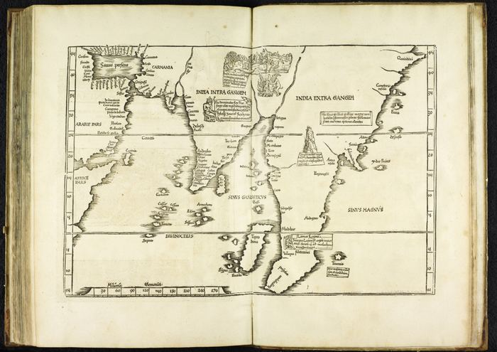
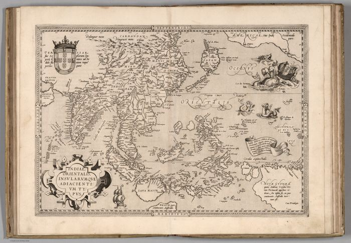
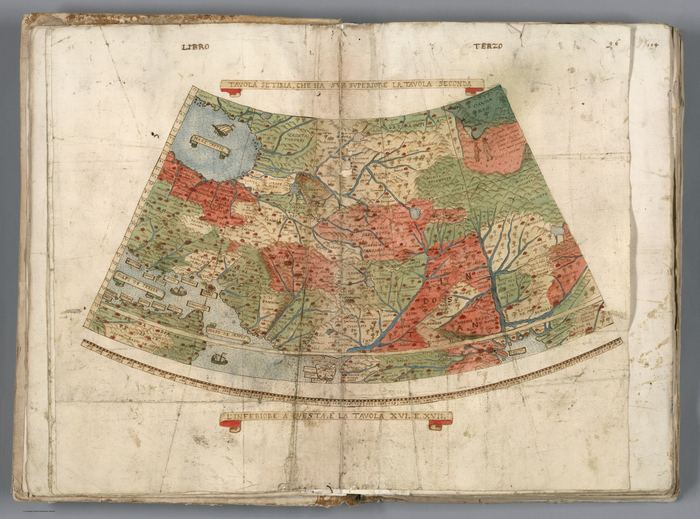
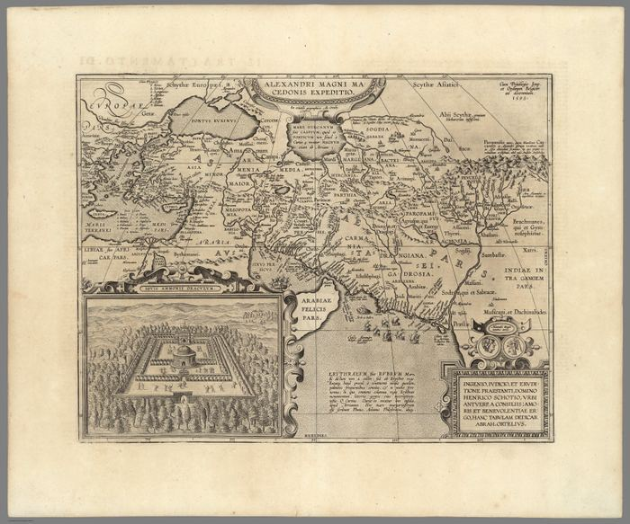
Enter →02The Great Mogul and the CompaniesMughal sovereignty, trading companies and the atlas market – India described, traded and published from outside.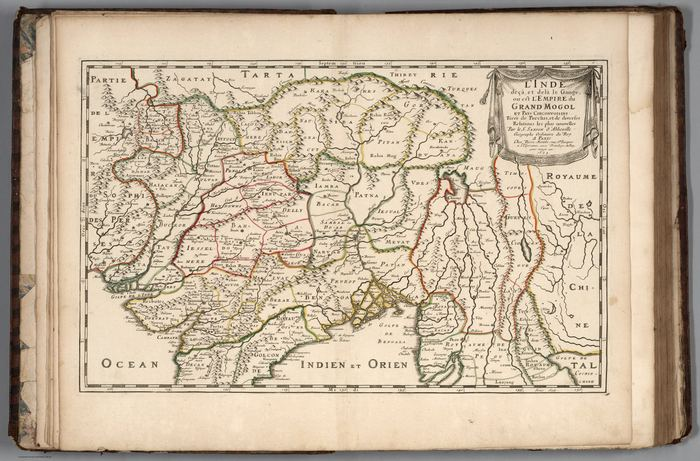
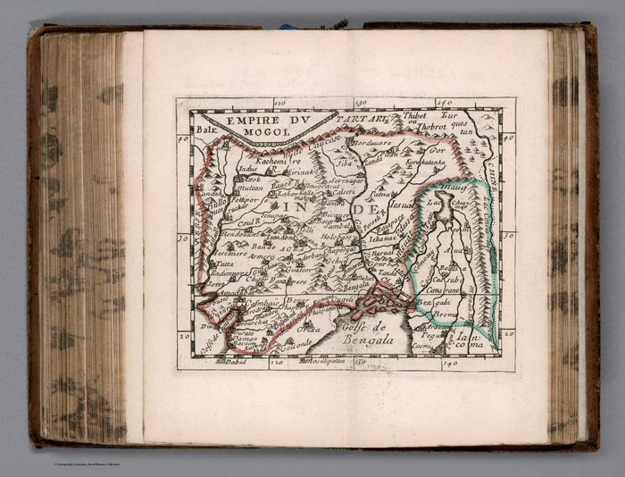
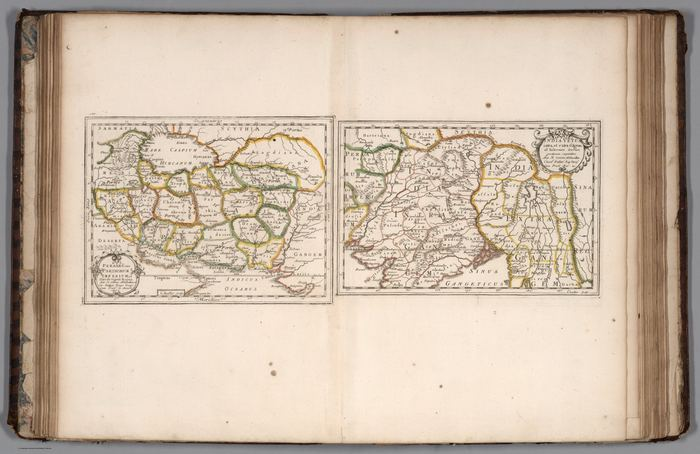
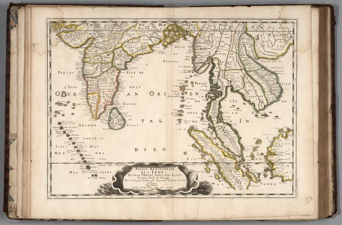
Enter →03The Survey TurnRennell, Lambton and the surveyors: India stops being chiefly reported and starts being systematically measured.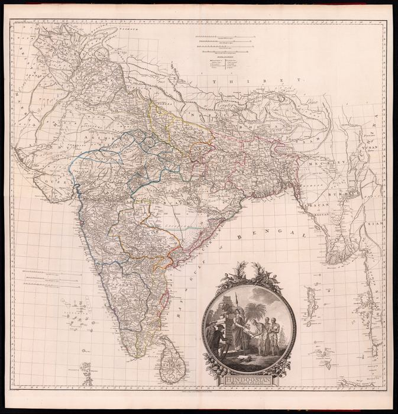
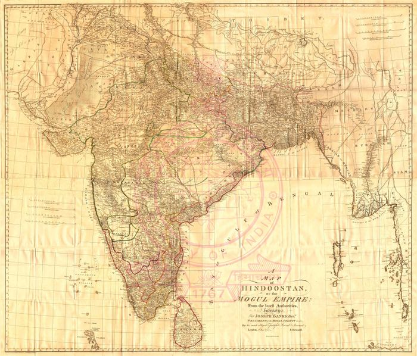
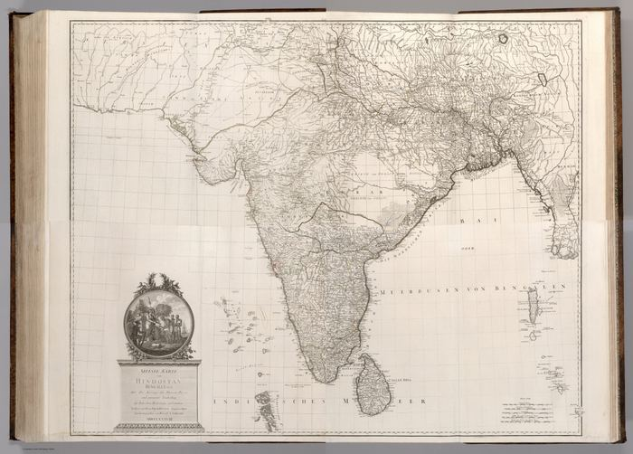
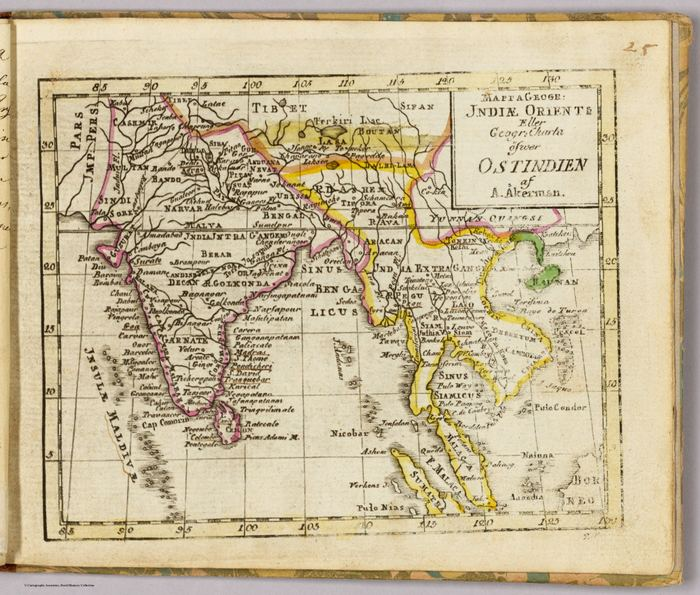
Enter →04Home Ground: Bombay and the DeccanThe gaze tightens to a region – harbour, district and city, down to the street and taluka.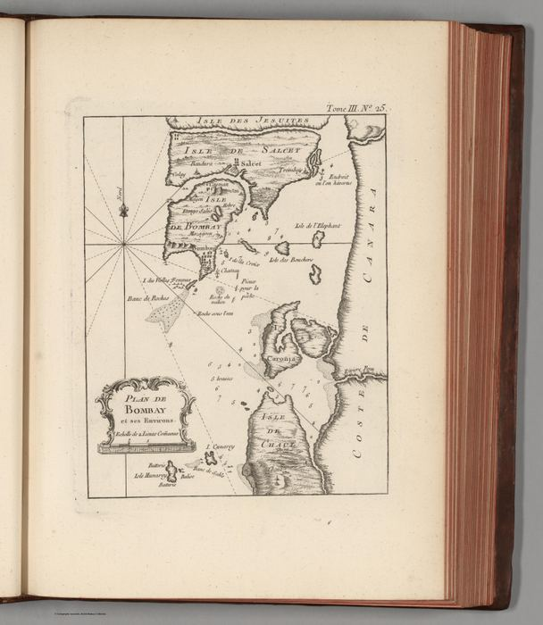
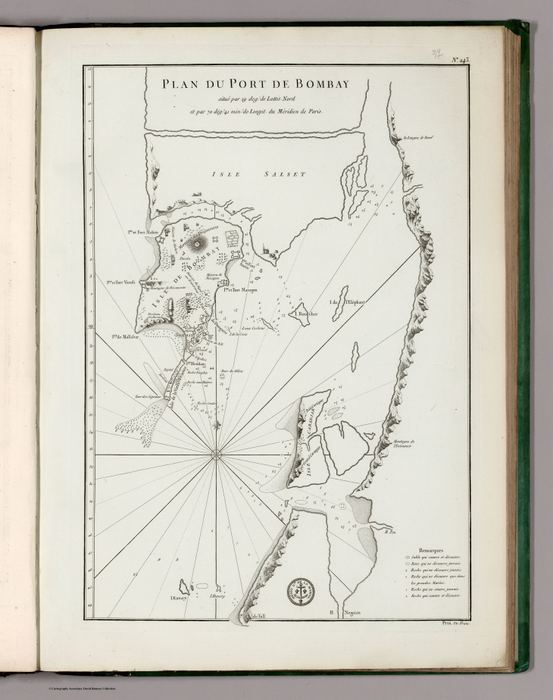
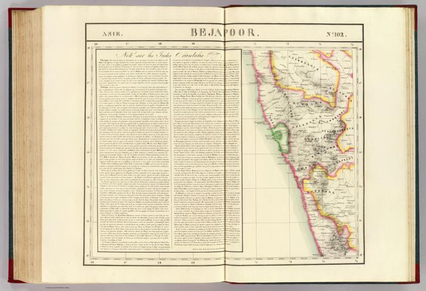
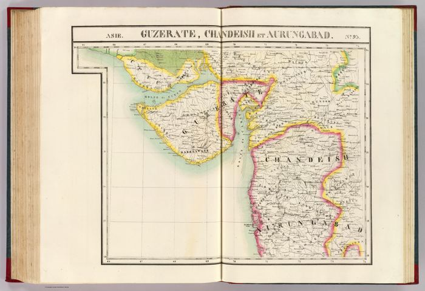
Enter →05Administered Empire and Victorian AtlasEmpire as analysis: India counted, classified and coloured for government and the high-Victorian atlas.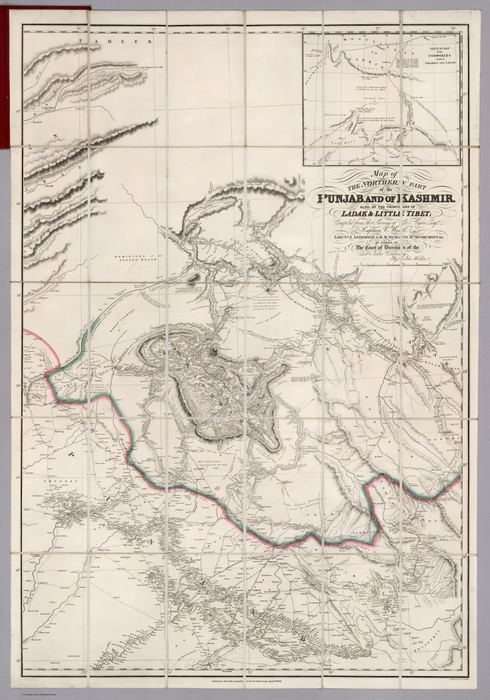
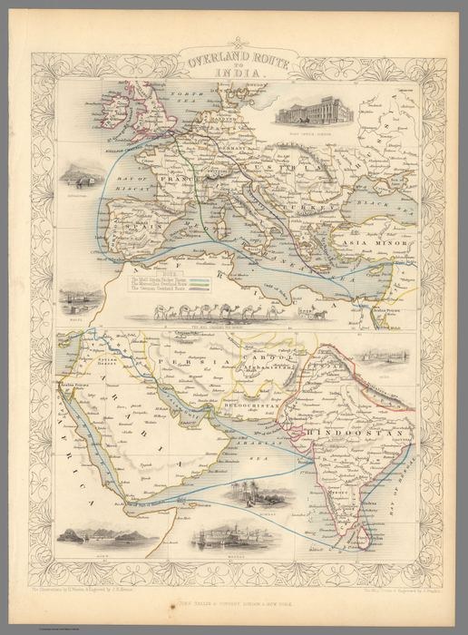
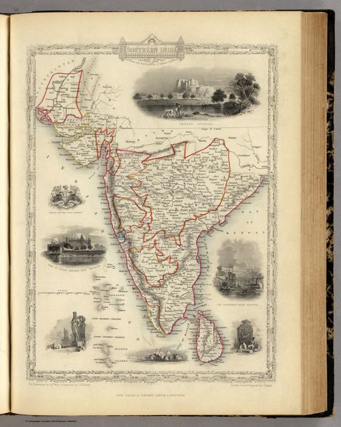
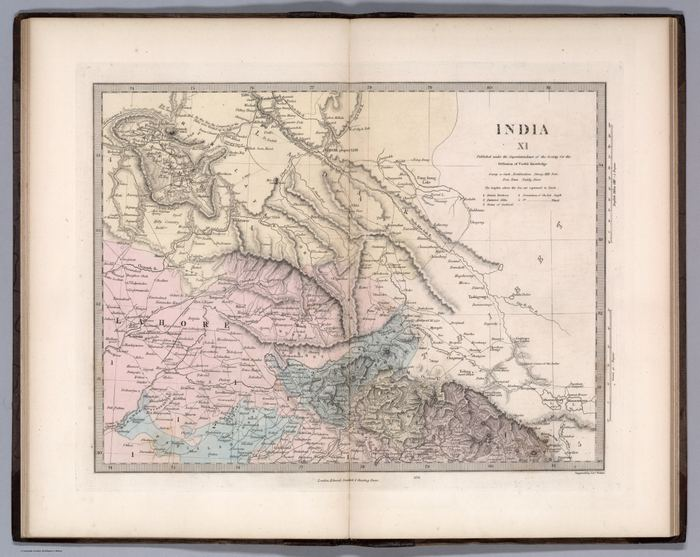
Enter →06The Sea and the RouteA maritime interlude – the ocean as Europe’s original and recurring approach to India.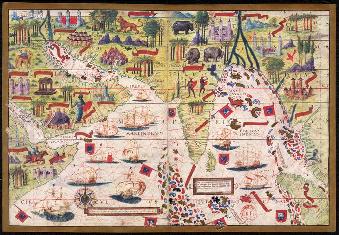
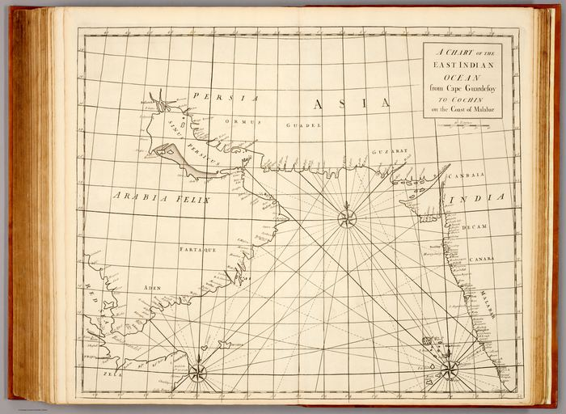
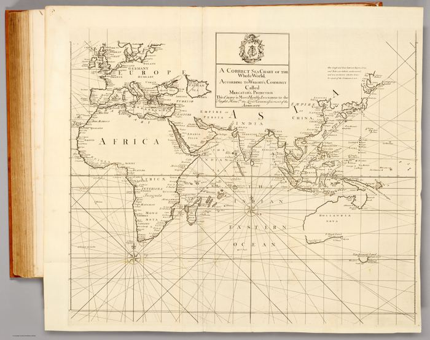
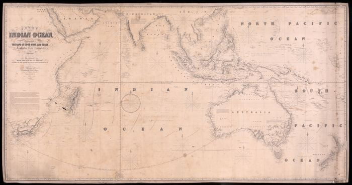
Enter →07Last FrontiersStrategic margins and imperial endings – wartime publics, surviving enclaves, partition planning and a 1947 epilogue.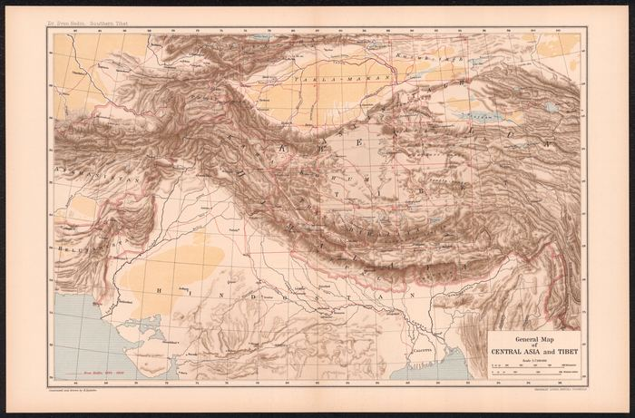
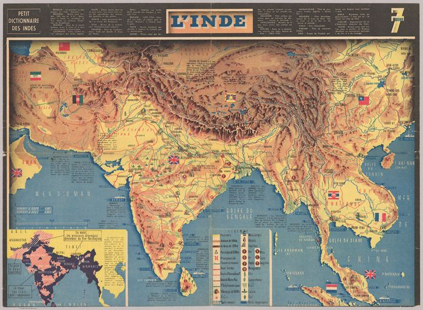
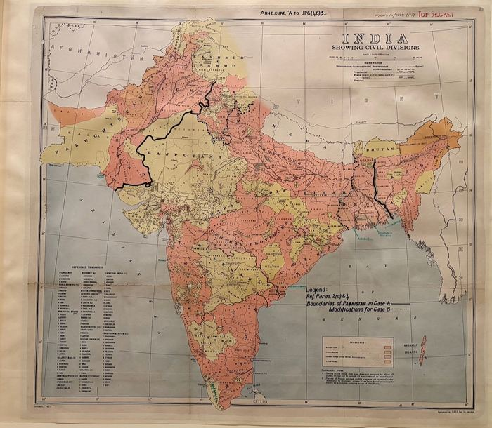
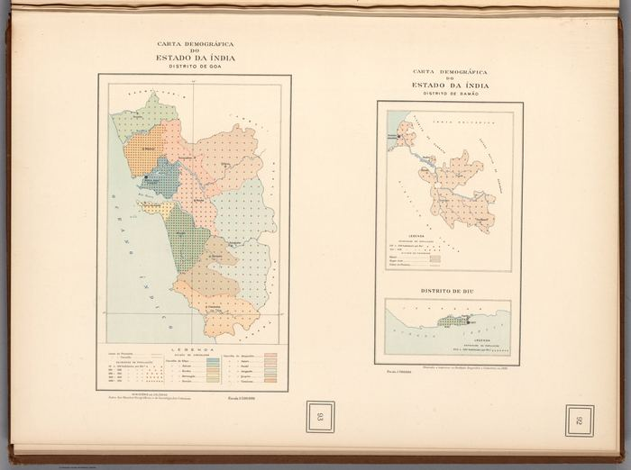
Enter →Not sure what you are looking at? How to read one of these is a short guide, and Places indexes the sheets by the Deccan’s towns, rivers and coasts.